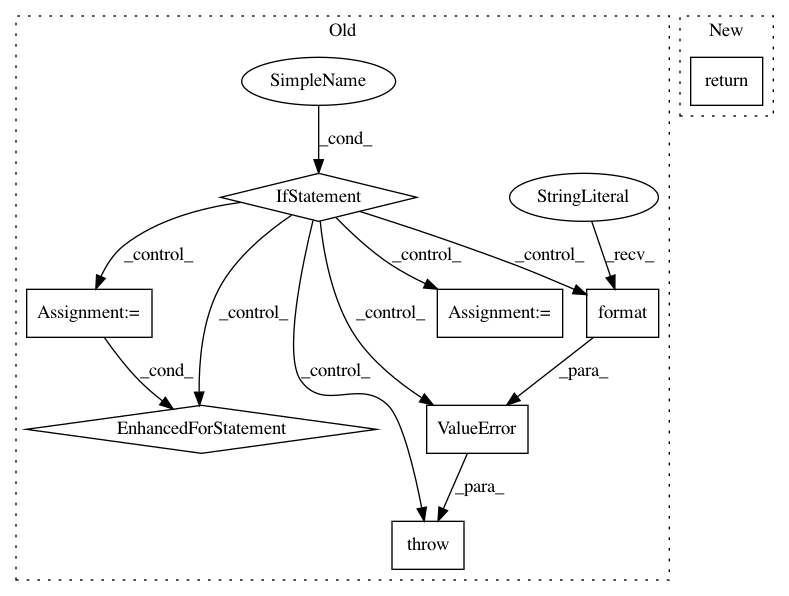

724dcb5b6bff305e6500edc1edb6ed2bd2d87fc5,chainercv/links/model/vgg/vgg16.py,VGG16Layers,functions,#VGG16Layers#,162
Before Change
("fc8", [_getattr("fc8")]),
("prob", [F.softmax]),
])
if any([name not in funcs for name in self._features]):
raise ValueError("Elements of `features` shuold be one of "
"{}.".format(funcs.keys()))
// Remove all functions that are not necessary.
pop_funcs = False
features = list(self._features)
for name in list(funcs.keys()):
if pop_funcs:
funcs.pop(name)
if name in features:
features.remove(name)
if len(features) == 0:
pop_funcs = True
return funcs
def __call__(self, x):
Forward VGG16.
After Change
def _getattr(name):
return getattr(self, name, None)
return collections.OrderedDict([
("conv1_1", [_getattr("conv1_1"), F.relu]),
("conv1_2", [_getattr("conv1_2"), F.relu]),
("pool1", [_max_pooling_2d]),
("conv2_1", [_getattr("conv2_1"), F.relu]),
("conv2_2", [_getattr("conv2_2"), F.relu]),
("pool2", [_max_pooling_2d]),
("conv3_1", [_getattr("conv3_1"), F.relu]),
("conv3_2", [_getattr("conv3_2"), F.relu]),
("conv3_3", [_getattr("conv3_3"), F.relu]),
("pool3", [_max_pooling_2d]),
("conv4_1", [_getattr("conv4_1"), F.relu]),
("conv4_2", [_getattr("conv4_2"), F.relu]),
("conv4_3", [_getattr("conv4_3"), F.relu]),
("pool4", [_max_pooling_2d]),
("conv5_1", [_getattr("conv5_1"), F.relu]),
("conv5_2", [_getattr("conv5_2"), F.relu]),
("conv5_3", [_getattr("conv5_3"), F.relu]),
("pool5", [_max_pooling_2d]),
("fc6", [_getattr("fc6"), F.relu, F.dropout]),
("fc7", [_getattr("fc7"), F.relu, F.dropout]),
("fc8", [_getattr("fc8")]),
("prob", [F.softmax]),
])
def _max_pooling_2d(x):
return F.max_pooling_2d(x, ksize=2)
In pattern: SUPERPATTERN
Frequency: 3
Non-data size: 8
Instances
Project Name: chainer/chainercv
Commit Name: 724dcb5b6bff305e6500edc1edb6ed2bd2d87fc5
Time: 2017-06-18
Author: yuyuniitani@gmail.com
File Name: chainercv/links/model/vgg/vgg16.py
Class Name: VGG16Layers
Method Name: functions
Project Name: asyml/texar
Commit Name: 830108b4b5f71f1a63cbd97c8131ba1aef4ac56a
Time: 2018-06-02
Author: zhitinghu@gmail.com
File Name: texar/utils/shapes.py
Class Name:
Method Name: mask_sequences
Project Name: ray-project/ray
Commit Name: 1775e89f262111791fabfd40f80a24f74738fe54
Time: 2020-04-28
Author: sven@anyscale.io
File Name: rllib/policy/policy.py
Class Name:
Method Name: clip_action